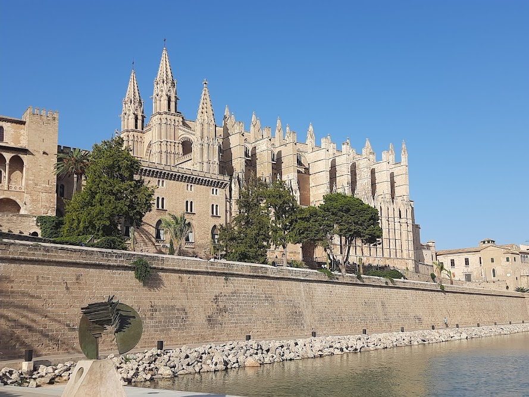
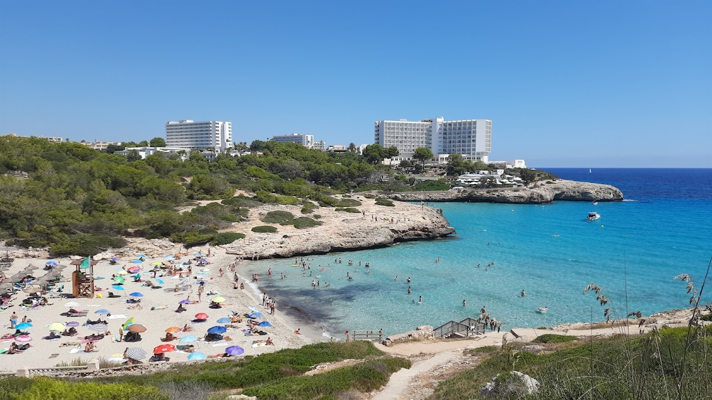
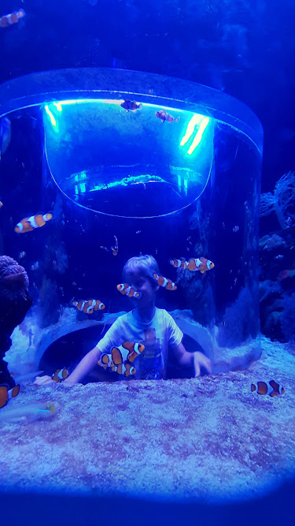
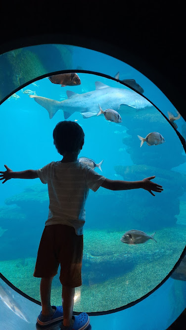
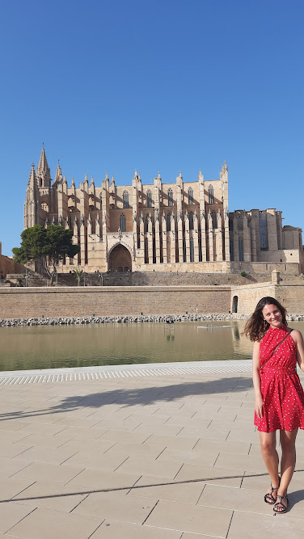
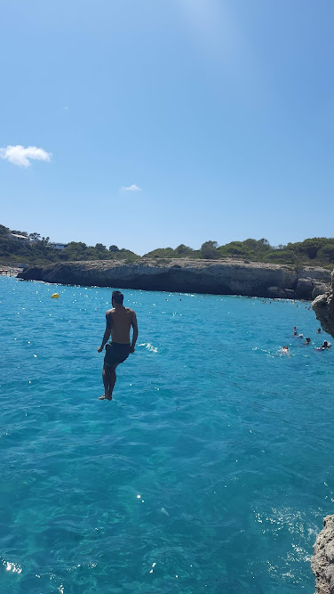
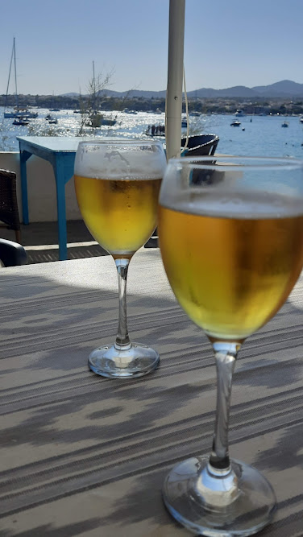

I confess that before moving to Germany Mallorca was not on the list of my travel plans. But after living here for a while I started to hear and read about this island so much that I got courious. Of course I didn't hear only good things. I was also not looking for a party place as it was Sommer Vacation and I was looking for a destination to travel to with my husband and son. I wanted a place that was sunny, hot, with beaches, not too far away and CHEAP -- hard in the middle of the highest season. So I left all prejudices aside (comments that this place was crowded and overturistic for example). I must say, thank God I didn't listen and we went! I was positively surprised by my time in this fantastic, varied, dynamic, happy, warm, beautiful island. I also did a lot of planning to avoid some typical "traps" and of course it was not entirely perfect - so I will tell you what I loved most and what I would have done different so you can learn from my mistakes when planning your trip there
 Catedral de PalmaOf course the easiest way to escape the crowd is to go on the low season, outside vacation periods and avoid the summer months. But even if you go in August like we did ( because of kid's school vacation) you can still enjoy a bit of calm if you stay away from the main beaches, like Palma. We divided the stay in two and rented two Airbnb places, we also rented a car to be able to move around. The first days we spent on the neighborhood of Sa Ràpita - the hostel was quite small and not to be recommended, the beach there was very rocky but since we had the car we actually went exploring around the island. The second half of days we spent in Cala Murada, at Apartamentos Cala Murada Minigolf. It is very close to a small supermarket, some restaurants, two beautiful beaches at walking distance and we had a feeling that it was a less touristic area as we saw some locals speaking catalan, just sitting around and enjoying the day. On weekends the beaches were still crowded but during the week a bit less, so for us it was a good choice considering the time of the year. Cala Domingos was one of the most beautiful beaches we saw in Mallorca and very close to the hotel. At the other nearby beach, Cala Murada, we had bad luck though and got there on a day where the sea was completely full of jelly fish - literally everywhere. So on this day we had to use the hotel pool instead as it was already a bit late to go search for another beach. But then we found out you could download an App where you could check the condition of the beaches every day and see if there were any Jellyfish alerts. I really recommend you check this before heading to the beach in Mallorca. Check the link here.
 Arriving at Cala DomingosTravelling with a 5 year old we wanted a beach whith calm waters and a long stretch of sand. We got it all at Es Trenc. Also the colour of the see was really impressive, transparent. Our son had a lot of fun there and we didn't have the worry as the water does not get very deep suddenly. Even though it was very crowded and it took us a long time to arrive because the entrance is a one-way street and it was totally jammed with cars (we probably spent more than an hour there) it was still worth it because we could find a spot on the sand and enjoy a whole day at this amazing sea. There are kiosks with overpriced food, so either you bring your own or be prepared to stay in line and spend a lot (at least on high season!). On another day we decided to look for a place with more waves since my son decided he actually loves to jump on the waves and we headed to Cala Major. There we also found many options of places to eat and a more "agitated" sea which was actually a lot of fun. He spent all day jumping the waves and spending all that energy that only 5 years old can have 😂
I also heard that Alcudia, in the north, is a great place to go/stay for families with kids and if we go again to Mallorca I would definetly stay there. We didn't have time on this trip though
Travelling with the young one, we couldn't miss a visit to the Palma Aquarium. In the high season I recommend to book your slot in advance. We also had to pay extra for parking as we couldn"t find a spot and the small parking lot that belong to the Aquarium itself. We booked to enter at 4pm and it turned out to be a bit late, because we only had about one hour and a half to enjoy all the Aquarium has to offer. It is quite big and very nice. Our favorite part was the one with the sharks, but also the one with a "tunnel" where you enter and feel like you are "inside" the aquarium which is full of Clown Fish. I called this our "Finding Nemo" moment, my son loved it. They also have a great playground outside so we could have spend many more hours there. It's a great tip for a rainy day (which probably won't happen if you go in August like we did), but also if you are just looking for some activity with kids that does not involve the beach
 Finding Nemo (literally!)  Watching the sharks at Palma AquariumYou can't miss a visit to the Catedral de Palma, the imponent building in the capital city. This is not the favorite program of kids, but close by there are many delicious ice cream shops garanteed to make them happy. We also found a small path full of trees which provided some well needed shade in the heat of 40 degrees. Close by there are playgrounds and the beach is not far away either. We found this one particularly nice with its big slide, posting the location here: Parc infantil, but I am pretty sure there are many others.
We then took a stroll on the Paseo Maritimo enjoying the breeze of the end of the afternoon. Being born and raised in Germany our son complained a bit about the high temperatures so keep that in mind if you travel in summer and make sure you use sun protection and carry lots of water with you.
 the Catedral is one of the most famous views of the cityAmong other things we also went to the beach of Antrax which had calm beautiful water, visited the fort in Portocolm and enjoyed some beers with a nice view of the beach in the nearby "chiringuito" (how they call the bars), watched the sunset almost everyday at the beach, spent an afternoon in the "once secret, now famous" Cala Sa Nau which has beatiful rock formations, little caves and as usual, blue, beautiful sea. Most days we found crowded beaches, after all, it was the highest season, but we were still able to find a nice spot in the sand. Unfortunatelly because of so many people and probably also due to the boats, sometimes we saw dirt floating in the water, small plastic and other types of garbage, which is sad, but didn't spoil the vacation. I would though like to come back to this island one day on the low season to be able to enjoy all the beauty around (not so many) people. Other types of activities like horse riding and tracking are also highly recommended if you travel in spring or autum. In the summer though, the highlight are the beaches, and with so many to choose from, specially if you rent a car, I am sure anyone can find a place they love in this captivating island.
 Jumping from a high rock on Cala Sa Nau  many Chiringuitos (local bars) offer nice beach views, like this one in Portocolm